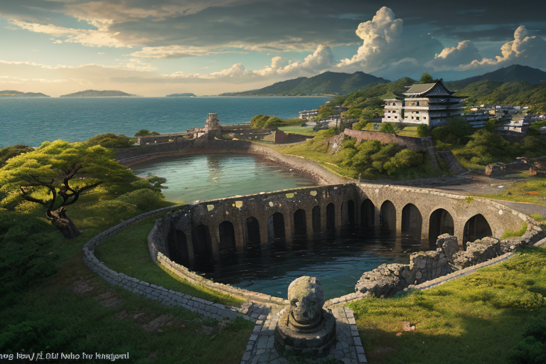
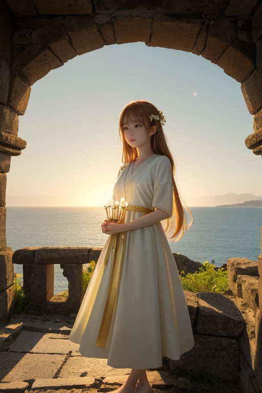
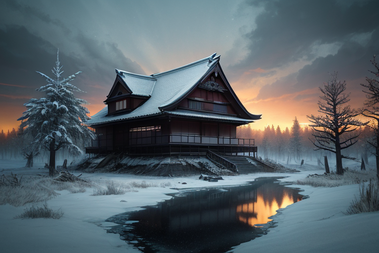
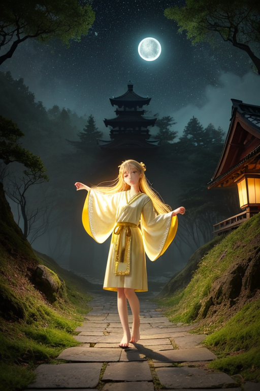
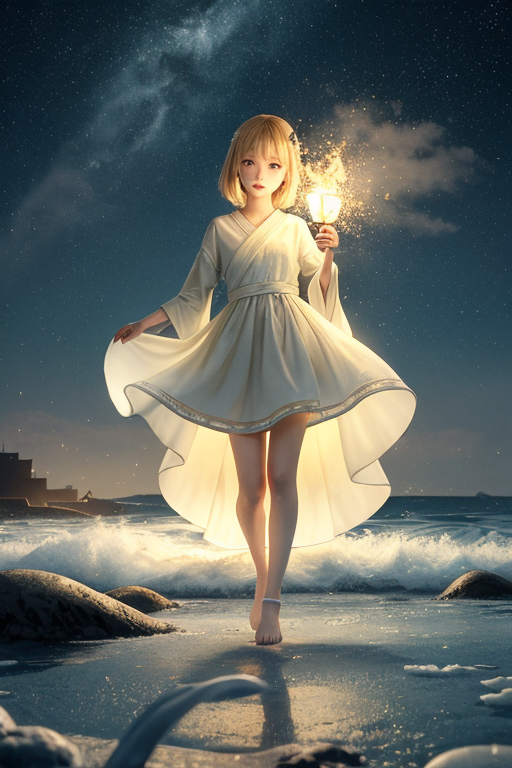

第一章「現実の宮城」
あなたはまだ気づいていない。この土地にも、王がいることを。
仙台城跡の本丸から見下ろす街は、青葉の緑に埋もれ、静かに息づいている。観光客の笑い声が風に乗り、伊達政宗の騎馬像は変わらぬ視線で町を見守る。しかし、この風景の下には、別の歴史の層が重なっている。2011年3月11日、この高台から見えたのは、濁流に飲まれ、黒煙が立ち上る街だった。あの日、この土地は多くのものを失った。人々の日常、当たり前の風景、未来への確信。
今、石巻の復興住宅の窓辺には、小さな観葉植物が並ぶ。路地裏には、津波の痕を示す水位標が、静かに、しかし確かに残されている。失うこと。それはこの土地にとって、決して過去の話ではない。松島湾に浮かぶ島々は、何度も隆起と沈降を繰り返し、その姿を変えてきた。この「歪みの列島」の一部である宮城は、喪失そのものを地層のように抱えている。
では、失ったあと、何を灯すのか。その問いが、この土地の空気に溶けている。

第二章 歪みの兆候
仙台城跡の石垣は、伊達政宗が築いた堅固なものではない。明治期に積み直された石が、2011年の震動で再び崩れた箇所が、今も修復中だ。歴史の歪みは、地層のように重なり、時に表面に亀裂を走らせる。
ミヤグリア・ルクスは、青葉城本丸から東の海を見つめていた。彼の目には、過去の巨大地震が引き起こした「歪み」の残滓が、微かな光の乱れとして視認できた。それは、単なる物理的な応力ではない。この地が幾度も経験した喪失の「記憶」が、地中に蓄積し、新たな不安定を生み出す種となっていた。彼の役目は、その種が暴発する寸前、ほんの少しだけその発現を遅らせ、方向をずらすことだ。巨大津波の再来を止めることはできない。だが、避難路の崩壊を一秒遅らせ、逃げ惑う人々の足元を、ほんの少しだけ安定させることはできる。
「灯王様」
ルミエラがそっと近づいた。彼女の手には、小さな笹かまぼこの形をした灯火が揺れている。
「今日も、調整は成功でした。でも、あなたの表情が重いです」
ミヤグリアは答えなかった。成功とは、被害をゼロにすることではない。最小化することだ。その「最小」の中に含まれる喪失の可能性を、彼は逐一、心に刻み続けていた。失うことを前提とした調整。それが、この王国の王の務めだった。

第三章 王の葛藤
蔵王の樹氷は、歪みの気配を青白く反射していた。次の大規模な「歪み」は、石巻の沿岸部を狙う。ミヤグリアの計算は、それを示していた。彼には二つの選択肢がある。一つは、歪みのエネルギーを分散させ、広範囲に小さな被害を散らすこと。もう一つは、エネルギーを一ヶ所に集中させ、そこに壊滅的な打撃を与える代わりに、他の地域を守ること。後者は、かつての大津波の教訓に基づく「選択的集中防護」と呼ばれる危険な調整だ。
「灯王様、それは…」
ルミエラの声が震えた。集中させられたエネルギーが向かう先には、新しい復興住宅街が広がっていた。失ったあと、人々が必死に灯した生活の灯だ。
「知っている」
ミヤグリアの声は低く、渇いていた。彼の手にある灯火の紋章が、激しく脈打つ。守るべきは過去の遺構か、未来の萌芽か。彼が下す決断は、単なる物理的調整を超え、この地の「復興」という物語そのものに介入することになる。自責の念が胃を締め付ける。彼は、神でも預言者でもない。ただの調整者だ。それでも、この一手が、次の「失うもの」と「灯すもの」を決めてしまう。

第四章 妖精との対話
瑞鳳殿の森は、夜露に濡れていた。伊達政宗が眠るこの地で、ミヤグリアは自らの灯火をかざし、歪みの波紋を見つめていた。選択は一つ。次の大きな歪みを、歴史的建造物群か、新興の復興住宅地か、どちらかに誘導するかだ。どちらを選んでも、何かが失われる。
「王様」
ルミエラがそっと肩に触れた。彼女の灯火は、優しい温もりを放っている。
「あなたは、『守る』ことだけが責務だと思い詰めていますね」
「……そうではないか」
「違います」ツキヒカリが、復興灯を掲げて現れた。「私たちが増幅するのは、『守りたい』という意志だけではありません。『変えたい』『前に進みたい』という意志も、同じくこの地に満ちている。震災の後、がれきの山から立ち上がった人々の灯を、あなたはご存じでしょう」
ミヤグリアは目を閉じた。脳裏に浮かぶのは、石巻の仮設住宅で配られた温かいずんだ餅の記憶。失った港町の代わりに、内陸に灯った新しい工場の明かり。それは、単なる「保存」を超えた「生成」の光だった。
「私は……何を灯せばいい？」
「過去の灯火を消さず、未来の灯火を怯ませず」ルミエラが囁いた。「あなたが灯すべきは、その『狭間』そのものです。変革には痛みが伴う。でも、この地は、痛みを知っているからこそ、次の灯りを必要としている」
王の紋章が、深い群青色から、決意の金色へと輝きを変えていった。

第五章 微調整と余韻
蔵王の樹氷が、月明かりに青白く浮かぶ夜だった。王は、石巻の港を見下ろす高台に立っていた。手に握られた紋章は、群青と金が激しく渦巻いていた。彼の目には、二つの光景が重なって見える。一つは、押し寄せる黒い津波。もう一つは、その十年後、同じ場所に建つ新しい防潮堤と、その上を走る子どもたちの笑い声だ。
「一度だけ」王は呟いた。「歴史の流れを、一度だけ曲げられる」
彼が選んだのは、津波そのものを止めることではなかった。あの日、港に取り残された一隻の小型漁船。その船に、一人の老人が乗っていた。王は、ほんの数秒、船のエンジンの始動を早め、岸壁への衝突角度を僅かに変えた。船は波に翻弄されながらも、奇跡的に堤防の陰へと流れ込んだ。
代償は大きかった。王の体を構成する光の粒子の一部が、一瞬で灰色に変わり、消え去った。それは、彼が本来持つべき未来の調整力の一部だった。彼は永遠に、あの数秒分の未来を「見る」ことができなくなった。
しかし、港には新しい灯りが灯った。老人が再建した船から、夜の海に投げられる漁り火だ。失ったものの大きさを前に、人は時に、より強く、より優しい灯りを灯す。王は、その灯りが波間に揺れるのを、静かに見守った。
あなたの町にも、王がいる。